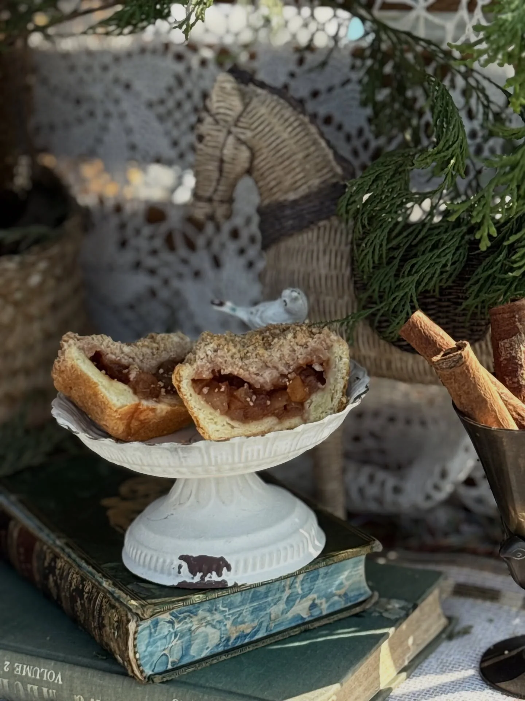
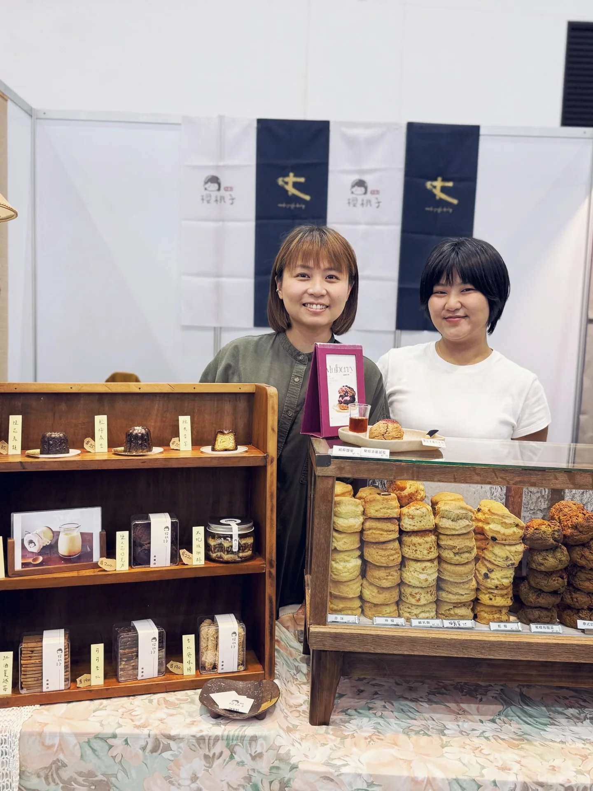
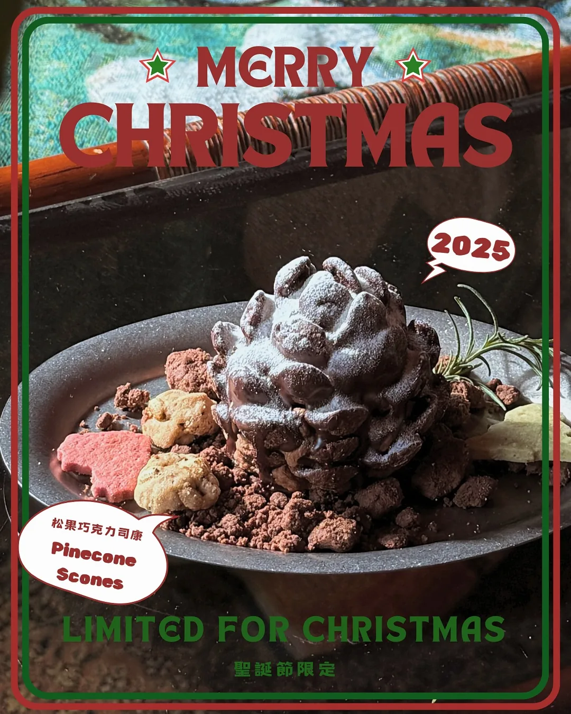
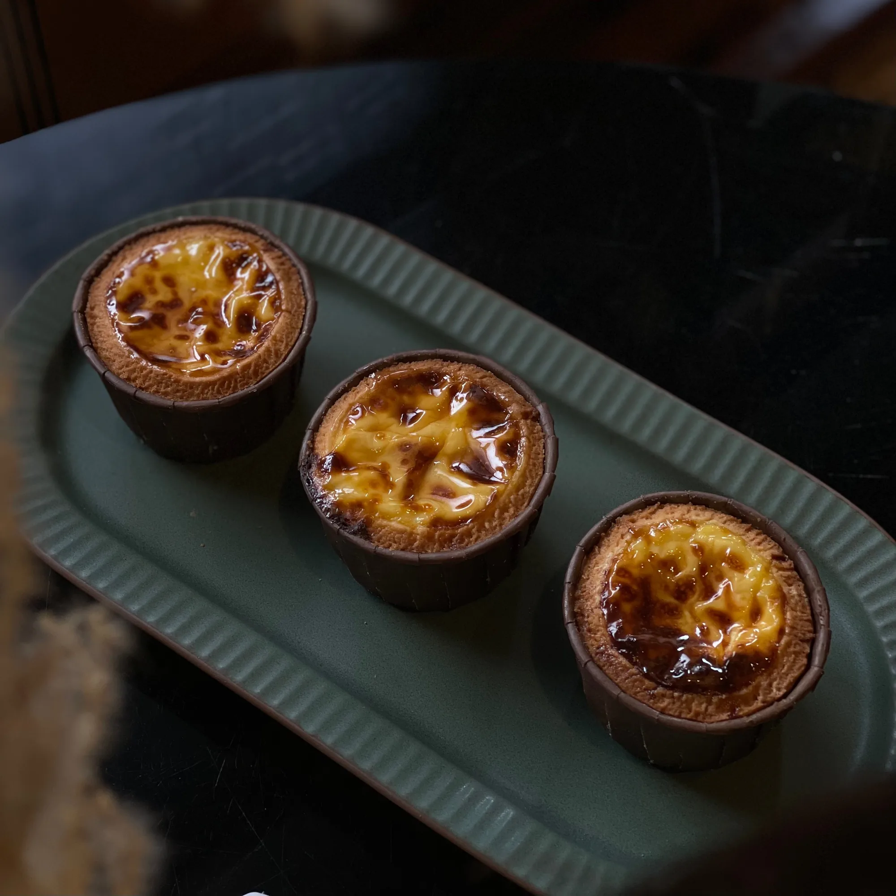

Amazing Scone
一間只做司康的小店，走到第十年
A. cake 是 A娜 的一人司康工作室。2016 年從台中開始，曾在西區的小巷店迎接客人，現在以大里工作室為據點，帶著司康走遍全台市集。
秉持一顆熱愛甜點的心，以天然蔬果素材入味：自己到桑園採收桑椹熬果醬、花八天照顧一批蜜漬橙片。我們相信吃司康可以是一件日常的事——吃得開心，也吃得安心。
Real Food, Great Taste, Happy Tummy. 認識 A. cake每一顆司康都在接單後才開始製作、單獨包裝。冰在冷凍庫，想吃的時候回烤一下，就像剛出爐一樣。


A. cake 是 A娜 的一人司康工作室。2016 年從台中開始，曾在西區的小巷店迎接客人，現在以大里工作室為據點，帶著司康走遍全台市集。
秉持一顆熱愛甜點的心，以天然蔬果素材入味：自己到桑園採收桑椹熬果醬、花八天照顧一批蜜漬橙片。我們相信吃司康可以是一件日常的事——吃得開心，也吃得安心。
Real Food, Great Taste, Happy Tummy. 認識 A. cake 常態供應
常態供應近 30 種口味任選，每顆單獨包裝，冷凍保存、回烤即食。
7-11 可直接下單 果香
果香橙片低溫蜜漬八天，果香與微苦韻味融進奶香裡。
7-11 可直接下單 常態供應
常態供應日本八幡屋礒五郎七味粉＋墨西哥辣椒，溫潤不嗆的辣。
需私訊預訂 常態供應
常態供應厚切司康夾入滿滿紅豆餡，一顆就很有份量。
7-11 可直接下單
季節限定聖誕節限定，糖粉像雪、可可奶酥像土壤。
需私訊預訂
常態供應A. cake 經典甜點，絲滑順口、不甜不膩。
7-11 可直接下單水交社眷村文化園區・12:00–18:00
免費入場員林園・13:00–18:00
香菜主題・免費入場臺北表演藝術中心
時間請見 IG 公告高雄市立美術館
時間請見 IG 公告下一檔市集還在安排中，請追蹤 IG 等最新公告。